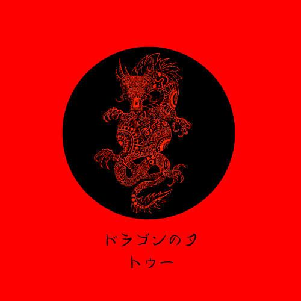

<mat-toolbar>
  <button id="menuSecciones" mat-icon-button class="example-icon" [matMenuTriggerFor]="seccion">
    <mat-icon>menu</mat-icon>
  </button>
  <mat-menu #seccion="matMenu">
    <button mat-button routerLink="/inicio">Inicio</button>
    <button mat-menu-item [matMenuTriggerFor]="producto">Productos</button>
  </mat-menu>

  
  <!-- se van a mostrar cuando la pantalla sea mayor a 700px -->
  <!-- boton para la vista de inicio -->
  <!-- Botón para la vista de Inicio -->
  <button id="menuProducto" mat-button routerLink="/inicio">Inicio</button>

  <!-- Menu desplegable -> PRODUCTOS -->
  <button id="menuInicio" mat-button [matMenuTriggerFor]="producto">Favoritos</button>
  <mat-menu #producto="matMenu">
    <button mat-menu-item routerLink="/producto">General</button>
    <button mat-menu-item routerLink="/alimentacion">Alimentación</button>
    <button mat-menu-item routerLink="/indumentaria">Indumentaria</button>
    <button mat-menu-item routerLink="/juguetes">Juguetes</button>
  </mat-menu>


  <div class="search">
    <div class="input-container">
      <input type="text" name="text" class="input" placeholder="search...">
      <span class="icon">
        <svg width="19px" height="19px" viewBox="0 0 24 24" fill="none" xmlns="http://www.w3.org/2000/svg">
          <g id="SVGRepo_bgCarrier" stroke-width="0"></g>
          <g id="SVGRepo_tracerCarrier" stroke-linecap="round" stroke-linejoin="round"></g>
          <g id="SVGRepo_iconCarrier">
            <path opacity="1" d="M14 5H20" stroke="#000" stroke-width="1.5" stroke-linecap="round"
              stroke-linejoin="round"></path>
            <path opacity="1" d="M14 8H17" stroke="#000" stroke-width="1.5" stroke-linecap="round"
              stroke-linejoin="round"></path>
            <path d="M21 11.5C21 16.75 16.75 21 11.5 21C6.25 21 2 16.75 2 11.5C2 6.25 6.25 2 11.5 2" stroke="#000"
              stroke-width="2.5" stroke-linecap="round" stroke-linejoin="round"></path>
            <path opacity="1" d="M22 22L20 20" stroke="#000" stroke-width="3.5" stroke-linecap="round"
              stroke-linejoin="round"></path>
          </g>
        </svg>
      </span>
    </div>
  </div>

  <span class="example-spacer"></span>

  <!-- Inicio de sesión y el Registro de un nuevo usuario -->
  <!-- menu desplegable para manejar todo el acceso de los -->
  <button mat-icon-button [matMenuTriggerFor]="usuario"><mat-icon>person</mat-icon></button>
  <mat-menu #usuario="matMenu">
    <button mat-menu-item (click)="ingresar()" *ngIf="logueado" routerLink="/registro">Registrarse</button>
    <button mat-menu-item (click)="ingresar()" *ngIf="logueado" routerLink="/inicio-sesion">Iniciar Sesión</button>
    <button mat-menu-item (click)="cerrarSesion()" *ngIf="deslogueado">Cerrar Sesion</button>
  </mat-menu>


  <!--Label para modo oscuro-->
  <label for="toggle" id="label_toggle"><i class="fa-solid fa-moon"></i></label>
  <input type="checkbox" id="toggle" (click)="cambiarFondo()">

</mat-toolbar>